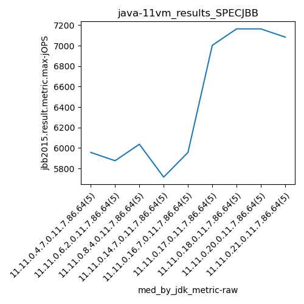
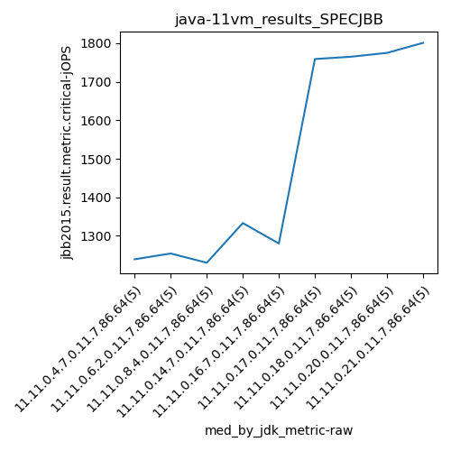

java-11 SPECJBB
Context at bottom
/home/jvanek/git/benchmarks-in-nested-virtualisation-toolchain/final_results/vm_results/vm_results_RADARGUNs1
java-11
SPECJBB
/home/jvanek/git/benchmarks-in-nested-virtualisation-toolchain/final_results/vm_results/vm_results_RADARGUNs3
java-11
SPECJBB
/home/jvanek/git/benchmarks-in-nested-virtualisation-toolchain/final_results/vm_results/vm_results_DACAPO
java-11
SPECJBB
/home/jvanek/git/benchmarks-in-nested-virtualisation-toolchain/final_results/vm_results/vm_results_J2DBENCH
java-11
SPECJBB
/home/jvanek/git/benchmarks-in-nested-virtualisation-toolchain/final_results/vm_results/vm_results_SPECJBB
java-11
SPECJBB
vm_results_SPECJBB
- vm_results_SPECJBB - max-jops
- vm_results_SPECJBB - critical jops
vm_results_SPECJBB - max-jops
Expected number of java-11 JDKs: 11
1st avgmed_alljdks_metric:
/home/jvanek/git/benchmarks-in-nested-virtualisation-toolchain/final_results/result_processing.py /home/jvanek/git/benchmarks-in-nested-virtualisation-toolchain/final_results/vm_results/vm_results_SPECJBB jbb2015.result.metric.max-jOPS False
values: [6054, 6187, 5957, 5635, 5876, 5635, 5715, 5876, 5957, 6118, 6037, 6254, 6198, 5796, 5876, 5716, 6440, 5876, 5635, 5715, 5957, 5796, 6037, 5957, 6187, 7037, 7003, 7003, 7245, 7003, 7164, 7326, 7245, 6923, 7003, 7164, 7003, 7245, 7406, 7003, 7084, 7037, 7245, 7084, 7245]

Expected number of iterations: 5
final number of values: 45 out of 55
Pass rate: 81.8%
values: (5635, 7406, 6465.666666666667, 6198)

** accuracy from all jdks and runs
more is better
MIN: 5635
MAX: 7406
AVG: 6465.666666666667
MED: 6198
Relative differences 1:
MIN-MAX: 24.0 %
MIN-AVG: 13.0 %
MIN-MED: 9.0 %
MAX-MIN: -31.0 %
MAX-AVG: -15.0 %
MAX-MED: -19.0 %
AVG-MED: -4.0 %
stored to java-11.properties. sort | uniq that!
2nd avgmed_by_jdk_metric:
values: [5941.8, 5860.2, 6032.2, 5876.4, 5986.8, 7058.2, 7132.2, 7164.2, 7139.0]

values: [5957, 5876, 6037, 5716, 5957, 7003, 7164, 7164, 7084]

values: (5860.2, 7164.2, 6465.666666666667, 6032.2)
values: (5716, 7164, 6439.777777777777, 6037)

** accuracy from all jdks where runs were avged
more is better
MIN: 5860.2
MAX: 7164.2
AVG: 6465.666666666667
MED: 6032.2
Relative differences 1:
MIN-MAX: 18.0 %
MIN-AVG: 9.0 %
MIN-MED: 3.0 %
MAX-MIN: -22.0 %
MAX-AVG: -11.0 %
MAX-MED: -19.0 %
AVG-MED: -7.0 %
stored to java-11.properties. sort | uniq that!
** accuracy from all jdks where runs were medianed
more is better
MIN: 5716
MAX: 7164
AVG: 6439.777777777777
MED: 6037
Relative differences 1:
MIN-MAX: 20.0 %
MIN-AVG: 11.0 %
MIN-MED: 5.0 %
MAX-MIN: -25.0 %
MAX-AVG: -11.0 %
MAX-MED: -19.0 %
AVG-MED: -7.0 %
stored to java-11.properties. sort | uniq that!
vm_results_SPECJBB - critical jops
Expected number of java-11 JDKs: 11
1st avgmed_alljdks_metric:
/home/jvanek/git/benchmarks-in-nested-virtualisation-toolchain/final_results/result_processing.py /home/jvanek/git/benchmarks-in-nested-virtualisation-toolchain/final_results/vm_results/vm_results_SPECJBB jbb2015.result.metric.critical-jOPS False
values: [1296, 1430, 1239, 1160, 1130, 1177, 1215, 1355, 1296, 1254, 1194, 1371, 1208, 1318, 1230, 1333, 1240, 1318, 1358, 1348, 1248, 1280, 1213, 1375, 1379, 1627, 1717, 1759, 1783, 1821, 1765, 1731, 1826, 1748, 1771, 1719, 1744, 1844, 1775, 1802, 1867, 1537, 1853, 1801, 1724]

Expected number of iterations: 5
final number of values: 45 out of 55
Pass rate: 81.8%
values: (1130, 1867, 1492.8666666666666, 1375)

** accuracy from all jdks and runs
more is better
MIN: 1130
MAX: 1867
AVG: 1492.8666666666666
MED: 1375
Relative differences 1:
MIN-MAX: 39.0 %
MIN-AVG: 24.0 %
MIN-MED: 18.0 %
MAX-MIN: -65.0 %
MAX-AVG: -25.0 %
MAX-MED: -36.0 %
AVG-MED: -9.0 %
stored to java-11.properties. sort | uniq that!
2nd avgmed_by_jdk_metric:
values: [1251.0, 1259.4, 1264.2, 1319.4, 1299.0, 1741.4, 1768.2, 1776.8, 1756.4]

values: [1239, 1254, 1230, 1333, 1280, 1759, 1765, 1775, 1801]

values: (1251.0, 1776.8, 1492.8666666666668, 1319.4)
values: (1230, 1801, 1492.888888888889, 1333)

** accuracy from all jdks where runs were avged
more is better
MIN: 1251.0
MAX: 1776.8
AVG: 1492.8666666666668
MED: 1319.4
Relative differences 1:
MIN-MAX: 30.0 %
MIN-AVG: 16.0 %
MIN-MED: 5.0 %
MAX-MIN: -42.0 %
MAX-AVG: -19.0 %
MAX-MED: -35.0 %
AVG-MED: -13.0 %
stored to java-11.properties. sort | uniq that!
** accuracy from all jdks where runs were medianed
more is better
MIN: 1230
MAX: 1801
AVG: 1492.888888888889
MED: 1333
Relative differences 1:
MIN-MAX: 32.0 %
MIN-AVG: 18.0 %
MIN-MED: 8.0 %
MAX-MIN: -46.0 %
MAX-AVG: -21.0 %
MAX-MED: -35.0 %
AVG-MED: -12.0 %
stored to java-11.properties. sort | uniq that!
/home/jvanek/git/benchmarks-in-nested-virtualisation-toolchain/final_results/vm_results/vm_results_JMH
java-11
SPECJBB
pass rates:
vm_results_SPECJBB=81.8%
Context:
- vm_results
- SPECJBB